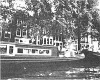

Upon returning from MOTHER's tours to Scotland and the Alps, we found our mail-as well as our minds-filled with more tips about European travel than we have space for. Here are the best of the bunch.
MORE ON INTER-RAIL
Two issues back we reported on the advantages an Inter-Rail pass, rather than the better-known Eurailpass, has to offer folks under 26 years of age . . . and we quoted our correspondent as saying that the two are valid for approximately the same countries. That, writes Kathleen Wilson, is not exactly true. "A Eurailpass," she points out, "is good in western Europe, excluding the British Isles, and can be used on a number of buses, lake and river steamers, and ferries . . . such as the one from Brindisi, Italy to Patras, Greece." (Participants in MOTHER's recent adventures used Eurailpasses for lovely cruises on Lake Thun and Lake Geneva.)
But Inter-Rail, as Kathleen notes, is valid in western Europe ( including Britain), parts of North Africa, and eastern Europe (although you'll still have to pay full fare in East Germany) . . . and also offers a 70% discount on some boats. Keep in mind, however, that you must pay half fare for all train rides within the country in which you purchase the pass, so Kathleen suggests that you buy and start using your Inter-Rail ticket in a small country, such as Luxembourg, to keep this expense to a minimum.
LESS EXPENSIVE YET
Meanwhile, Shona Roberts of Berlin, West Germany reports that most European universities have bulletin boards which many people (not just students) use to advertise for and offer rides. "By reading those notices, I was able to travel from Berlin to northern Denmark, for example, for just under $8.00," says Shona. "I'd just telephone the ride that interested me and settle on a price . . . which usually turned out to be my agreeing to buy a share of the gas. (There are also commercially run outfits - which can be located through each city's tourist office - that will organize rides, but they do charge a few dollars for their services, of course.)"
Ms. Roberts goes on to note that while you're visiting universities in search of transportation, you can save money by eating at their government-subsidized cafeterias. On West German campuses, a full meal with some fruit will run about $1.00. "The universities are also good places to meet people," Shona adds.
GOING NATIVE Everett Roberts wrote us to describe his family's upcoming European vacation . . . which is set to begin in Amsterdam with a call to "Get in Touch With the Dutch". This service will supply the name and address of a Dutch family - whose interests are similar to those of their prospective guests (the Robertses, for example, want to learn to make hard cheese) - with whom the travelers can visit. (Switzerland has a similar program that's named "Don't Miss the Swiss", which you can find out about through Swiss tourist offices.)
"After leaving the Netherlands," Everett writes, "we'll spend a farm vacation in Germany, which we arranged by writing to the German National Tourist Office [Dept. TMEN, 620 Fifth Avenue, New York, New York 10020]. Again, we've chosen a plan that's tailored to our interests, but there are many possibilities: One can arrange for accommodations in the farmhouse or in separate cabins with kitchens. Some farms have riding facilities . . . others offer wine-tasting tours, hunting trips, and the like. The price quoted for our stay is $8.50 per person per night, including breakfast."
MORALS AND MANNERS MOM's tourists found themselves impressed, during their recent European sojourn, by the nearly universal friendliness and good manners of Amsterdam's citizenry. Equally impressive, however, was the adroitness of that liberal, picturesque city's pickpockets. Since we'd been forewarned, we were all the more amazed when - while traveling on a crowded tram - one of our people had her wallet lifted from a well-zipped purse tucked firmly under her arm. (Thefts should be reported immediately to the police, who'll provide a report for tax purposes and issue notifications of credit card losses.)
Conversely, in Austria our travelers were startled by occasional uncalled-for rudeness . . . but the honesty of the residents we encountered - as well as that of the more courteous Swiss - was beyond reproach. In fact, while in those two countries, members of our group managed to drop or leave behind four wallets and a newly purchased Austrian jacket . . . all of which were promptly returned intact. Even so, everyone became convinced that traveler's checks and a money belt are wise tour investments!
Remember, you receive a free one-year subscription to MOTHER if your travel tip is published in this column. Write to Getting There, THE Mother Earth News (restricted) , P.O. Box 70, Hendersonville, North Carolina 28791.
|
|
 |
|